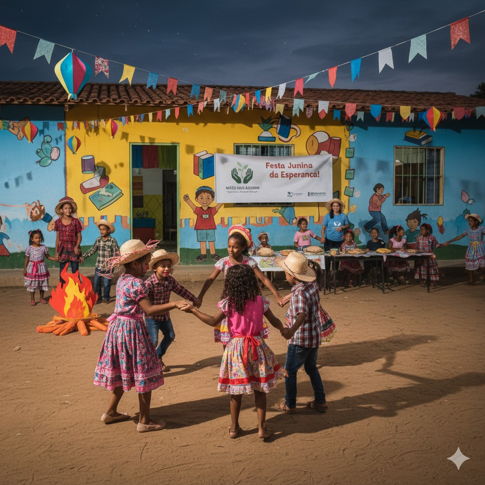

15 de Junho, 2025 |
Eventos
Festa Junina Solidária Arrecada Fundos para Projeto Educacional
Nossa tradicional festa junina foi um sucesso! Com a ajuda da comunidade, arrecadamos o suficiente para equipar nossa nova sala de informática...
![[Rosto sorridente de uma voluntária]](imagens/voluntaria.png)